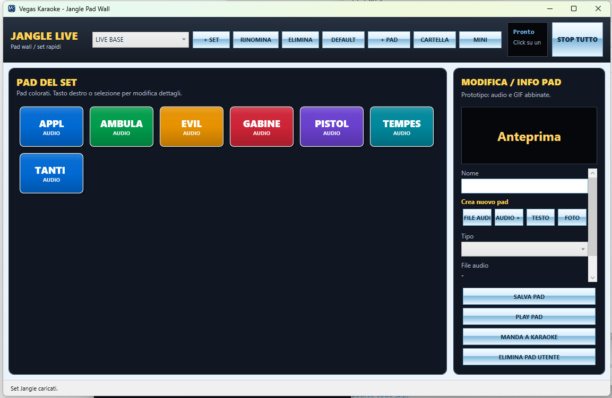

Jangle Live: pad effetti per karaoke, DJ e serate live
La nuova finestra Jangle Pad Wall è più moderna, compatta e pensata per il lavoro dal vivo: puoi lanciare effetti audio, applausi, GIF, video, testi animati, foto e slideshow direttamente sulla schermata karaoke.

Jangle Pad Wall 1.7.4
Pad colorati, set personalizzabili, anteprima, editor laterale e invio alla finestra karaoke.
Nuove funzioni Jangle
Modalità FULL e MINI
Modalità FULL per gestione completa dei pad e modalità MINI per uso rapido durante il live, con 5 pad visibili, frecce di scorrimento e menu ALTRO con comandi rapidi.
Pad colorati e stop immediato
I pad colorati permettono di riconoscere subito gli effetti. Con un click parte il pad; con STOP TUTTO fermi immediatamente ogni effetto Jangle.
Set Jangle personalizzati
Gestione di più set, creazione nuovo set, rinomina, eliminazione con conferma e ripristino del set default LIVE BASE anche se cancellato per errore.
Pad audio, GIF, video e foto
Aggiungi pad audio da file, pad Audio + GIF/video, pad Foto / slideshow e contenuti rapidi da mandare alla finestra karaoke.
Editor laterale
Modifica nome, tipo e opzioni del pad, visualizza l'anteprima direttamente nella finestra Jangle e salva automaticamente set e pad creati.
Default separati dai personali
I pad personali restano separati dai default, così puoi lavorare in sicurezza senza perdere gli effetti base del programma.
Pad Testo Animato
Testo personalizzabile
Scrivi messaggi live, dediche, avvisi o animazioni per il pubblico con grandezza testo regolabile.
Animazioni direzionali
Movimento centrale, dal basso verso l'alto, dall'alto verso il basso, da sinistra verso destra e da destra verso sinistra.
Controllo live
Velocità regolabile, auto stop configurabile e opzione per mostrare il testo solo quando il player è fermo o in standby.
Pad Foto / Slideshow
Cartella foto
Scegli una cartella di immagini e crea slideshow automatici da usare durante pause, introduzioni o momenti speciali.
Tempi regolabili
Imposta il tempo per ogni foto e l'auto stop, così lo slideshow si adatta alla serata.
Transizioni eleganti
Transizione dissolvenza e zoom lento per rendere la schermata karaoke più professionale.
Suoni Jangle inclusi
La versione 1.7.4 include nuovi pad di default pronti per il live.
Applausi
Effetto rapido per momenti di pubblico, presentazioni e fine brano.
Ambulanza
Suono immediato per momenti comici o scenette live.
Evil
Effetto speciale per stacchi, giochi e animazione.
Gabinetto
Effetto divertente da usare con attenzione durante serate e giochi.
Pistola
Effetto audio rapido per sketch e momenti scenici.
Tanti auguri
Pad utile per compleanni e feste private.
Tempesta
Atmosfera sonora per effetti speciali e presentazioni.
Uso live
La modalità mini è pensata per occupare poco spazio mentre lavori: cambio set veloce, comandi principali sempre a portata e possibilità di mandare effetti, testi o immagini direttamente sulla schermata karaoke.